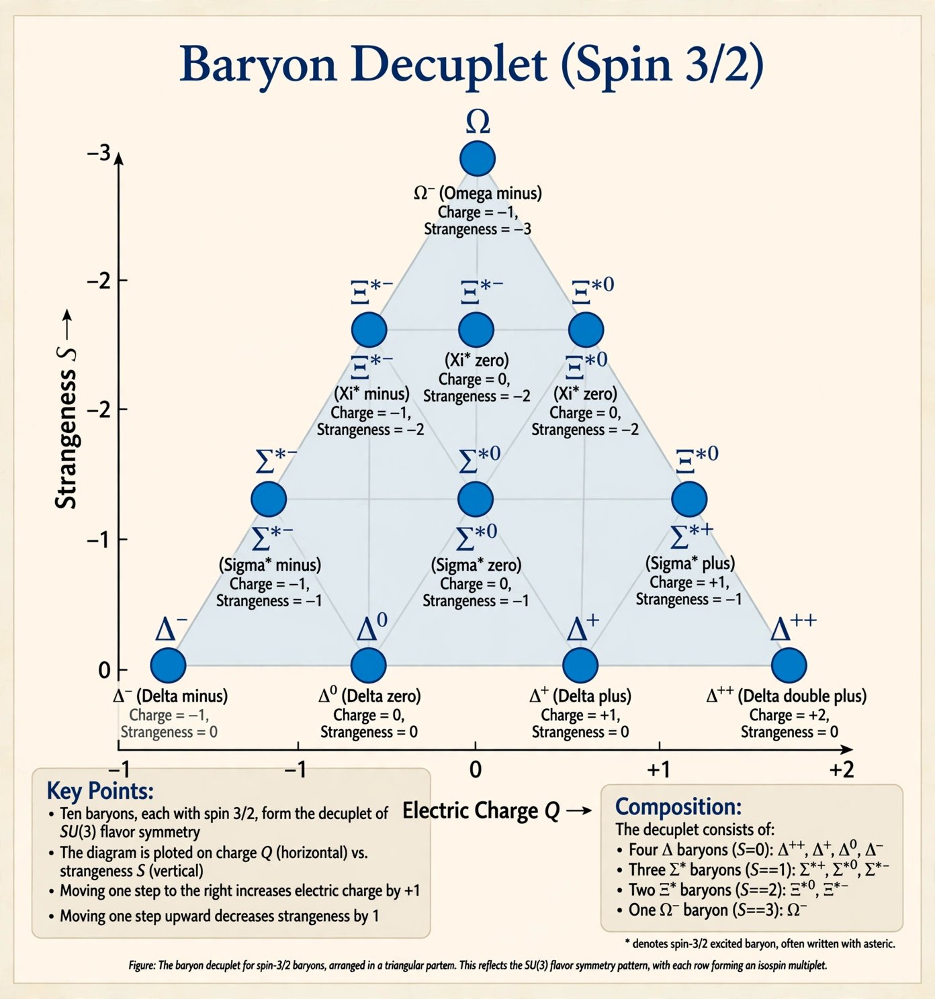

| Proposed | 1961 |
|---|---|
| Proposers | Murray Gell-Mann; Yuval Ne'eman |
| Framework | Flavour SU(3) symmetry |
| Legacy | Led to the quark model (1964) |
In physics, the Eightfold Way is an organisational scheme for a class of subatomic particles known as hadrons, grouping them into multiplets according to their strangeness and electric charge. It was proposed independently in 1961 by the American physicist Murray Gell-Mann and the Israeli physicist Yuval Ne'eman, and it brought order to the "particle zoo" of hadrons discovered in the 1950s. The name, coined by Gell-Mann, is a wry allusion to the Noble Eightfold Path of Buddhism.
The Eightfold Way is based on an approximate flavour symmetry, SU(3), acting on the three lightest quarks — up, down and strange. Hadrons fall into multiplets corresponding to representations of the group: mesons and the lightest baryons form octets (eight-member families arranged in hexagonal patterns), while a family of ten baryons forms a decuplet arranged in a triangle. Within a multiplet, particles have similar masses and properties, with mass splittings described by the Gell-Mann–Okubo mass formula.
The most famous success of the scheme was the prediction of the Ω⁻ (omega-minus) baryon: the decuplet had one empty slot, whose occupant's mass, charge, strangeness and decay chain were all predicted in advance. The particle was discovered at Brookhaven National Laboratory in 1964, a triumph comparable to Mendeleev's prediction of missing elements. The symmetry pattern also cried out for a deeper explanation, which Gell-Mann and George Zweig supplied the same year with the quark model: hadrons are built from fractionally charged quarks. Gell-Mann received the 1969 Nobel Prize in Physics in part for this work.